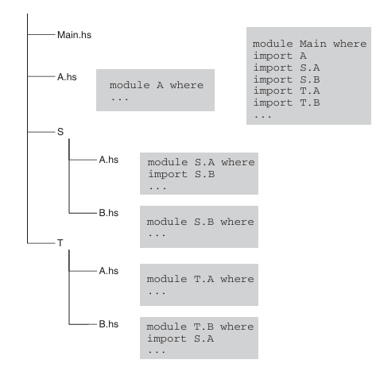

模块、包和项目
使用模块组织代码
每一个Haskell应用都是一组模块的集合，每一个模块都可以导入来自其他模块、基础库以及其他库的定义；除此之外，模块还可以到处一些定义，这些定义对于其他模块将变得可见（可以被其他模块导入）。在众多模块中有一个特殊的模块Main，该模块作为程序进入点，有且仅有一个。
模块介绍
一个Haskell模块的结构如下：
module ModuleName (<export list>) where
-- set of imports
-- declarations for main codes such as
-- + data types and type synonyms
-- + type classes and instances
-- + functions
-- etc
其中模块名称ModuleName首字母必须大写，且建议与文件名称一致。
对于导入模块：
import SomeModule可以导入整个模块import SomeModule(name1,name2,...)可以导入模块中指定的名字import SomeModule()不导入模块的任何名字，不具有名字的实例除外import qualified SomeModule导入整个模块但保留完整前缀，import qualified SomeModule(name1,name2,...)导入指定名字但保留完成前缀；这意味我们必须使用SomeModule.name1对name1进行调用import qualified SomeModule as Alias导入整个模块并使用别名Alias；这意味我们必须使用Alias.name1对name1调用，而非SomeModule.name1import SomeModule hiding (name1,name2,...)导入整个模块除了name1、name2等
对于导出列表<export list>来说：
可以导出函数的名称
可以导出数据类型（使用
(..)跟随类型构造器，可包含值（全部或部分）构造器）类型类的名称（使用
(..)跟随类型类名称，可包含（全部或部分）内部方法）已经导入的模块的名称或同义词
例如：
module ModuleName (
module X,
module Y,
DataType1,
DataType2 (..),
DataType3 (Cons1, Cons2),
TypeClass1,
TypeClass2 (..),
TypeClass3 (method1,method2),
fun1, fun2, fun3
) where
import X
import qualified SomeModule as Y
使用以上的导出，当我们在其他模块中导入该模块时，可以使用的是：
模块X和模块Y中导出的任何内容
DataType1类型构造器，但我们无法进行模式匹配或构造该类型的值DataType2类型构造器以及内部所有的值构造器DataType3类型构造器以及内部的两个构造器Con1和Con2，如果另有构造器Con3则该构造器无法被使用TypeClass1类型类，内部方法无法使用TypeClass2类型类，内部方法只有method1和method2可以被使用TypeClass3类型类以及全部方法均可以被使用fun1、fun2、fun3三个函数
补充：
<export list>并不是必须的，我们可以声明module ModuleName where以便模块可以全部导出；但通常情况下，除非模块内容非常少，否则不建议这样做
模块层次
模块名称具有层次的，可以使用.对元素进行分隔，如Data.Typeable。一般地，模块层次及其名称有如下对应关系：

包
一个 包(package) 可以认为由两部分组成：
对每个导出模块的接口文件
2 编译过的（静态或者动态）库文件
当编译器编译程序时，首先读取源文件导入的模块名称，接着在包数据库中查找哪些包提供了需要的模块以及对应的构建在文件系统的位置；然后编译器查找这些模块的接口文件并使用文件中的信息编译模块，在链接阶段，会查找由这些包提供的静态或者动态库；最后编译器链接所有的静态或动态库得到可执行文件或库。
ghc-pkg命令用于查找数据库中包的信息，我们可以使用ghc-pkg list查看当前注册的所有包的名称和版本；ghc-pkg describe ...命令可以进一步查看某个包更详细的信息；或者，我们还可以通过命令ghc-pkg find-module ...查找某个模块所对应的包。
Prelude> ghc-pkg list
/home/user/.ghcup/ghc/8.6.4/lib/ghc-8.6.4/package.conf.d
Cabal-2.4.0.1
array-0.5.3.0
base-4.12.0.0
...
Prelude> ghc-pkg describe base
name: base
version: 4.12.0.0
id: base-4.12.0.0
key: base-4.12.0.0
license: BSD-3-Clause
maintainer: libraries@haskell.org
...
Prelude> ghc-pkg find-module Data.Typeable
/home/user/.ghcup/ghc/8.6.4/lib/ghc-8.6.4/package.conf.d
base-4.12.0.0
提示：
ghc-pkg命令查找的是GHC的全局数据库，除了将包安装到全局，我们还可以使用项目管理工具，为某个项目设置单独的环境，将需要的包安装到相应的项目上。
包管理工具Cabal
Cabal库定义了Haskell包的信息并提供了操作包的工具（包括但不限于获取包的信息、构建包、注册包）。
Cabal包中有两个至关重要的文件，其中之一以.cabal后缀结尾，该文件定义了包内详细的描述信息；另外一个为Setup.hs文件，其为但文件程序，用于执行各种设置任务，该文件内容由.cabal文件中的生成类型设置确定，一般情况下我们只需交给Cabal生成该文件即可。
对于一个.cabal文件来说，其包含：
被其他包调用模块的库组件
任意多个可执行组件
测试套件(test suites)
基准测试套件(benchmark suites)
由主程序库，可执行组件库，测试套件和基准测试套件共享的内部库
下面给出官网几个示例:
包含简单库的包(HUnit package)
cabal-version: 3.0
name: HUnit
version: 1.1.1
synopsis: A unit testing framework for Haskell
homepage: http://hunit.sourceforge.net/
category: Testing
author: Dean Herington
license: BSD-3-Clause
license-file: LICENSE
build-type: Simple
library
build-depends: base >= 2 && < 4
exposed-modules: Test.HUnit.Base, Test.HUnit.Lang,
Test.HUnit.Terminal, Test.HUnit.Text, Test.HUnit
default-extensions: CPP
default-language: Haskell2010
包含可执行程序的包
cabal-version: 3.0
name: TestPackage
version: 0.0
synopsis: Small package with two programs
author: Angela Author
license: BSD-3-Clause
build-type: Simple
executable program1
build-depends: HUnit >= 1.1.1 && < 1.2
main-is: main.hs
hs-source-dirs: prog1
default-language: Haskell2010
executable program2
-- A different main.hs because of hs-source-dirs.
main-is: main.hs
build-depends: HUnit >= 1.1.1 && < 1.2
hs-source-dirs: prog2
other-modules: Utils
default-language: Haskell2010
包含库和可执行程序
cabal-version: 3.0
name: TestPackage
version: 0.0
synopsis: Package with library and two programs
license: BSD-3-Clause
author: Angela Author
build-type: Simple
library
build-depends: HUnit >= 1.1.1 && < 1.2
hs-source-dirs: lib
exposed-modules: A, B, C
default-language: Haskell2010
executable program1
main-is: main.hs
hs-source-dirs: prog1
other-modules: D, E
default-language: Haskell2010
executable program2
-- A different main.hs because of hs-source-dirs.
main-is: main.hs
-- No bound on a library provided by the same package.
build-depends: TestPackage
hs-source-dirs: prog2
other-modules: Utils
default-language: Haskell2010
包含测试套件
Cabal-Version: 3.0
Name: bar
Version: 1.0
License: BSD-3-Clause
Build-Type: Simple
Test-Suite test-bar
type: detailed-0.9
test-module: Bar
build-depends: base >= 4 && < 5, Cabal >= 1.9.2 && < 2
default-language: Haskell2010
包含基准测试套件
Cabal-Version: 3.0
Name: foo
Version: 1.0
License: BSD-3-Clause
Build-Type: Simple
Benchmark bench-foo
type: exitcode-stdio-1.0
main-is: bench-foo.hs
build-depends: base >= 4 && < 5, time >= 1.1 && < 1.7
default-language: Haskell2010
有关参数的细致说明，读者可以移步官网按需查询，限于篇幅这里不再赘述。
从零创建一个简单的项目
提示： 不同的Cabal版本构建项目过程不尽相同，但原理基本一致
本节将提供一个简单且完整的可执行项目示例，该项目功能未读取用户输入的数字，并输出对应的阶乘结果。
首先，使用Cabal管理工具初始化项目cabal init，这里为了便于读者了解创建过程，使用交互模式初始化cabal init --interactive。
$ mkdir myproject
$ cd myproject
$ cabal init --interactive
Should I generate a simple project with sensible defaults? [default: y] n
What does the package build:
1) Executable
2) Library
3) Library and Executable
Your choice? 1
What is the main module of the executable:
* 1) Main.hs (does not yet exist, but will be created)
2) Main.lhs (does not yet exist, but will be created)
3) Other (specify)
Your choice? [default: Main.hs (does not yet exist, but will be created)]
Please choose version of the Cabal specification to use:
1) 1.10 (legacy)
2) 2.0 (+ support for Backpack, internal sub-libs, '^>=' operator)
3) 2.2 (+ support for 'common', 'elif', redundant commas, SPDX)
* 4) 2.4 (+ support for '**' globbing)
5) 3.0 (+ set notation for ==, common stanzas in ifs, more redundant commas, better pkgconfig-depends)
Your choice? [default: 2.4 (+ support for '**' globbing)]
Package name? [default: myproject]
Package version? [default: 0.1.0.0]
Please choose a license:
* 1) NONE
2) BSD-2-Clause
3) BSD-3-Clause
4) Apache-2.0
5) MIT
6) MPL-2.0
7) ISC
8) GPL-2.0-only
9) GPL-3.0-only
10) LGPL-2.1-only
11) LGPL-3.0-only
12) AGPL-3.0-only
13) GPL-2.0-or-later
14) GPL-3.0-or-later
15) LGPL-2.1-or-later
16) LGPL-3.0-or-later
17) AGPL-3.0-or-later
18) Other (specify)
Your choice? [default: NONE]
Author name? [default: waste-of-kindergarten]
Maintainer email? [default: 2020141461068@stu.scu.edu.cn]
Project homepage URL?
Project synopsis?
Project category:
* 1) (none)
2) Codec
3) Concurrency
4) Control
5) Data
6) Database
7) Development
8) Distribution
9) Game
10) Graphics
11) Language
12) Math
13) Network
14) Sound
15) System
16) Testing
17) Text
18) Web
19) Other (specify)
Your choice? [default: (none)]
Application (Main.hs) directory:
* 1) app
2) src-exe
3) (none)
4) Other (specify)
Your choice? [default: app]
What base language is the package written in:
* 1) Haskell2010
2) Haskell98
3) Other (specify)
Your choice? [default: Haskell2010]
Add informative comments to each field in the cabal file (y/n)? [default: n]
Guessing dependencies...
Generating CHANGELOG.md...
Generating app/Main.hs...
Generating myproject.cabal...
Warning: no synopsis given. You should edit the .cabal file and add one.
You may want to edit the .cabal file and add a Description field.
完成创建后，我们可以看到myproject文件夹中多了如下内容：
$ tree -- sudo apt install tree
.
├── app
│ └── Main.hs
├── CHANGELOG.md
└── myproject.cabal
1 directory, 3 files
项目文件夹比较简单，只有app文件夹，.cabal文件以及一个说明文件CHANGELOG.md。
我们首先在app文件夹中创建一个名为Fac.hs的文件，并在内部添加阶乘函数：
-- Fac.hs
module Fac (factorial) where
factorial :: Integer -> Integer
factorial x = if x < 0
then error " x < 0 not allowed"
else fun x
fun :: Integer -> Integer
fun 0 = 1
fun x = x * fun (x - 1)
这里为了避免频繁地进行条件判断，在factorial函数中只进行一次范围判断，对于合法的数字，定义fun函数用于正常的阶乘运算。
然后修改Main.hs文件如下：
module Main where
import Fac
import System.Environment(getArgs)
main :: IO ()
main = do
args <- getArgs
let num = read (head args) :: Integer
print $ factorial num
主程序从命令行中读取用户输入的数字参数，并将其转化为整数，最终输出阶乘的结果。
最后，为了让主程序能够探测到Fac模块的位置，需要修改.cabal文件，将other-modules取消注释并添加Fac。
...
executable myproject
main-is: Main.hs
-- Modules included in this executable, other than Main.
other-modules: Fac
...
保存完毕后，编译文件并执行。
# 编译
$ cabal build
Build profile: -w ghc-8.6.4 -O1
In order, the following will be built (use -v for more details):
- myproject-0.1.0.0 (exe:myproject) (first run)
Preprocessing executable 'myproject' for myproject-0.1.0.0..
Building executable 'myproject' for myproject-0.1.0.0..
[2 of 2] Compiling Main ( app/Main.hs, /home/user/myproject/dist-newstyle/build/x86_64-linux/ghc-8.6.4/myproject-0.1.0.0/x/myproject/build/myproject/myproject-tmp/Main.o )
Linking /home/user/myproject/dist-newstyle/build/x86_64-linux/ghc-8.6.4/myproject-0.1.0.0/x/myproject/build/myproject/myproject ...
$ cabal run
cabal run myproject -- "5"
Up to date
120
项目的打包与安装
我们将上一节中的项目从可执行程序更改为库，重新初始化后文件层次如下：
$ tree
.
├── CHANGELOG.md
├── myproject.cabal
├── src
│ └── MyLib.hs
└── test
└── MyLibTest.hs
2 directories, 4 files
将MyLib.hs更改为Fac.hs，并将上一节的内容复制到这个文件中。
接着修改.cabal文件：
...
library
exposed-modules: Fac
...
我们希望在打包前能够测试一下这个包是否能够正常使用，因此还需要修改一下测试文件MyLibTest.hs:
module Main (main) where
import Fac
import Test.HUnit
import System.Exit
tests :: Test
tests = TestList
[ "Test 1" ~: assertEqual "x > 0 ?" 120 (factorial 5),
"Test 2" ~: assertEqual "x = 0 ?" 1 (factorial 0) ]
main :: IO ()
main = do
counts <- runTestTT tests
if errors counts == 0 && failures counts == 0
then exitSuccess
else exitFailure
然后修改.cabal文件的测试部分：
...
test-suite myproject-test
default-language: Haskell2010
type: exitcode-stdio-1.0
hs-source-dirs: test , src -- 此处添加src，以便Fac可见
main-is: MyLibTest.hs
build-depends: base ^>=4.12.0.0, HUnit -- 添加额外的HUnit依赖
至此，我们就可以执行测试了：
$ cabal test
...
Running 1 test suites...
Test suite myproject-test: RUNNING...
Test suite myproject-test: PASS
Test suite logged to:
/home/user/myproject/dist-newstyle/build/x86_64-linux/ghc-8.6.4/myproject-0.1.0.0/t/myproject-test/test/myproject-0.1.0.0-myproject-test.log
1 of 1 test suites (1 of 1 test cases) passed.
测试成功，接下来我们就可以将项目进行打包和安装。
$ cabal build & cabal run
...
Linking /home/user/myproject/dist-newstyle/build/x86_64-linux/ghc-8.6.4/myproject-0.1.0.0/t/myproject-test/build/myproject-test/myproject-test ...
Cases: 2 Tried: 2 Errors: 0 Failures: 0
# 创建一个归档
$ cabal sdist
Wrote tarball sdist to
/home/user/myproject/dist-newstyle/sdist/myproject-0.1.0.0.tar.gz
对于本地项目我们可以直接cabal install，对于获得归档文件的用户来说，需要解压归档然后安装：
$ tar -xf myproject-0.1.0.0.tar.gz
$ cd myproject-0.1.0.0
$ cabal install --lib
# 注意这个lib必须要加，否则会被认为安装的是和执行文件
Wrote tarball sdist to
/home/user/myproject/myproject-0.1.0.0/dist-newstyle/sdist/myproject-0.1.0.0.tar.gz
Resolving dependencies...
Build profile: -w ghc-8.6.4 -O1
In order, the following will be built (use -v for more details):
- myproject-0.1.0.0 (lib) (requires build)
Starting myproject-0.1.0.0 (lib)
Building myproject-0.1.0.0 (lib)
Installing myproject-0.1.0.0 (lib)
Completed myproject-0.1.0.0 (lib)
至此，myproject包已经安装完成，现在可以尝试在GHCi中使用它了。
Prelude> import Fac
Prelude> factorial 5
120
Prelude> factorial 0
1
Prelude> factorial (-1)
*** Exception: x < 0 not allowed